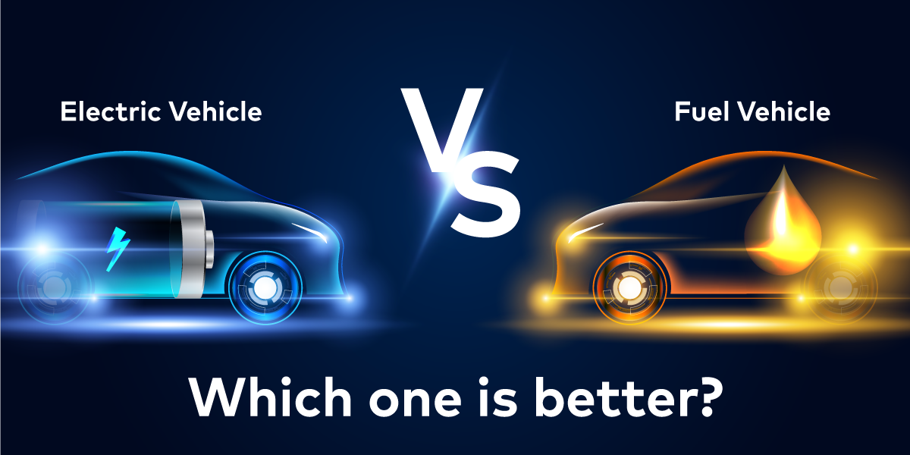

In an effort to lessen urban air pollution, governments all over the world are promoting battery-powered automobiles, which are seen as the way of the transportation future. However, the growing attention to EVs has also highlighted certain environmentally unfriendly features of these battery-powered vehicles. Some even go so far as to say that EVs harm the environment more than cars with internal combustion engines (ICEs).
Electric grid power, which is frequently derived from fossil fuels, is used to charge EVs.
Fuel Vehicles Vs Electric Vehicles
Throughout the course of an automobile's life, whether it is battery- or ICE-powered, carbon emissions are produced. Three broad categories can be used to categorize emissions: production, use, and car scrapping.
Currently, when an automobile is scrapped, very little carbon is released into the atmosphere; in fact, a Yale University study found that the amount of pollution produced by abandoned ICE and electric vehicles is equal. Therefore, experts typically compare the environmental damage caused by combustion and electric cars based on the emissions released during the stages of production and use.
When it comes to production, an average car manufacturer is estimated to release 2 metric tonnes of carbon into the atmosphere, according to a Massachusetts Institute of Technology study. However, the manufacturer of a high-end vehicle might contribute roughly 17 metric tons of carbon emissions to the atmosphere. Thus, using the apples-to-apples principle, an electric car and a fuel vehicle in the same market segment have been compared.
Let's start by examining the production stage now that the disclaimer has been addressed. The majority of research has demonstrated that the environmental impact of producing electric cars is greater than that of producing combustion cars. The main cause of this is the large battery that electric cars use. Therefore, the manufacturing of an electric vehicle (EV) produces 15.3 metric tonnes of carbon dioxide, compared to the 10 metric tonnes released during the production of a fuel car.

But when it comes to actually using the car, fuel-powered vehicles lose this advantage. The US Department of Energy estimates that a fuel-powered vehicle emits 5.2 metric tonnes of carbon dioxide annually on average. After maintaining the yearly commute distance at 19,300 km, the figure has been reached. However, for the same distance, an electric car emits 2.2 metric tonnes of carbon dioxide, according to research by the US Alternative Fuel Data Centre.
It is reasonable to conclude that, for the first 20 months or so, an electric car and a fuel-powered car are equally harmful to the environment based on these emission data. That's when the difference starts to show. Electric cars emit far less pollution than their internal combustion engine counterparts after the first 20 months of use.
Even if we expand the scope of this EV vs. ICE discussion to include oil drilling and lithium extraction, electric vehicles will still be marginally superior. The extraction of lithium-ion, a vital component of EVs, is harmful to the environment, as EV skeptics frequently point out.
Although there is some validity to the argument, it is important to remember that only 5–7% of an EV battery is composed of lithium ions. Furthermore, even though it requires a lot of water, the extraction of lithium occurs in barren environments where life is impossible. Take the Atacama desert in Chile, for example. On the other hand, oil drilling occurs on ocean floors, disrupting the local marine ecosystem.